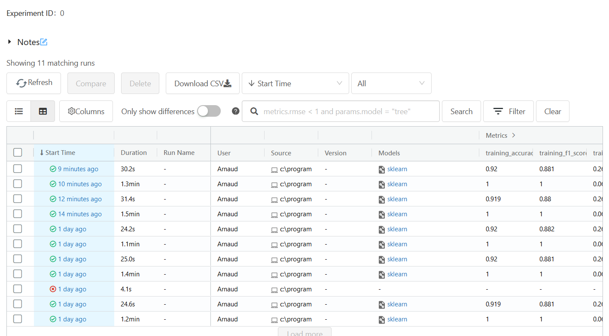
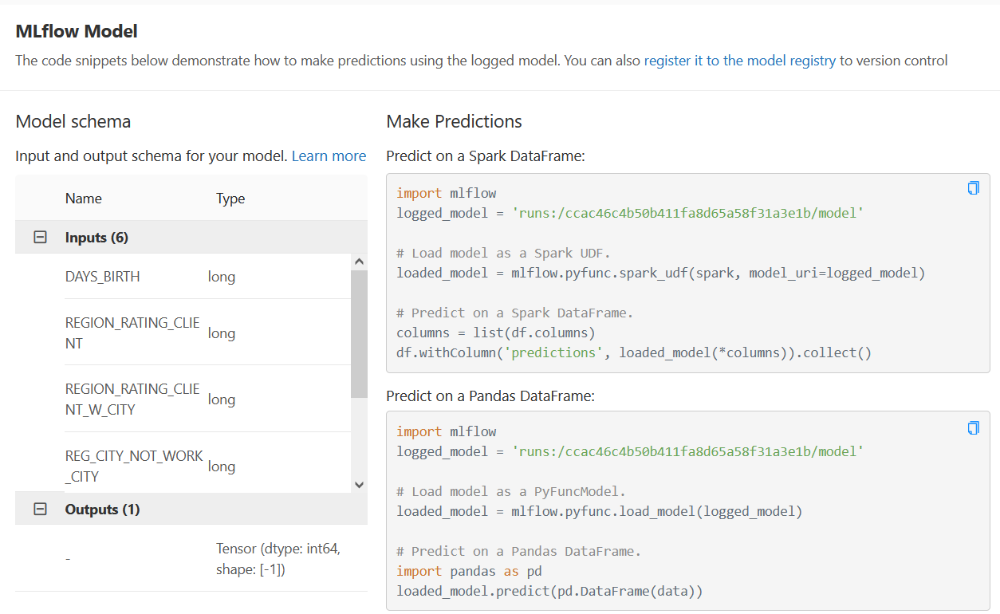

Model Training and Predictions¶
Set up the training¶
To allow models to be trained, we will specify which column the models should focus on and set a part of the whole data as training sample.
y = new_df['TARGET']
X = new_df.copy().drop(['TARGET'], axis = 1)
X_train, X_test, y_train, y_test = train_test_split(X, y, test_size=0.33)
Use of different models¶
- Model training will use the same pattern :
Call the model you want to use
Fit the data
Make the model do predictions
Look for its score.
Each bullet point in this paragraph can be associated with a line in the following code blocks. In that way, we have for the following models :
XGBoost¶
xgboost = xgb.XGBClassifier()
xgboost.fit(X_train, y_train)
xgboost_predict = xgboost.predict(X_test)
metrics.accuracy_score(y_test, xgboost_predict)
RandomForest¶
rf = RandomForestClassifier(n_estimators = 100)
rf.fit(X_train, y_train)
rf_predict = rf.predict(X_test)
metrics.accuracy_score(y_test, rf_predict)
GradientBoosting¶
gb = GradientBoostingClassifier(learning_rate = 0.1)
gb.fit(X_train, y_train)
gb_predict = gb.predict(X_test)
metrics.accuracy_score(y_test, gb_predict)
For these models, we get accuracies of respectively 91.75%, 91.58% and 91.76%
Mlfow UI¶
To be able to track the different models with mlflow, we need to run this command line before any model :
mlflow.sklearn.autolog()
Then open a terminal and execute :
mlflow ui
It will show to which server we have to go (http://127.0.0.1:5000). /!\ The server needs the mlflow tracking to be ran to be able to work correctly. If the UI shows nothing, run the command line directly in the directory where the mlruns directory is.
{kind=link}
Then we just need to click on one of the different tracking done to see the code proposed to do predictions.
{kind=link}
We can copy-paste the pandas proposition in a notebook and see the prediction done by the mlflow. On the most of them, it is around 91.75%.